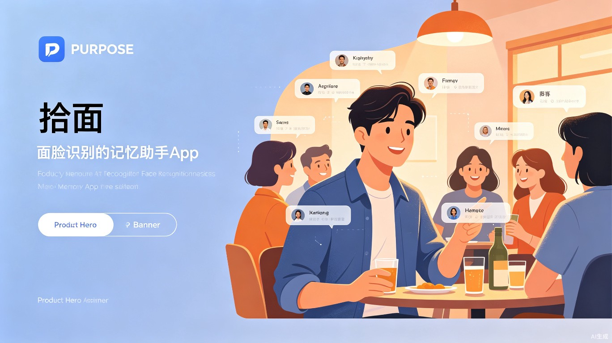
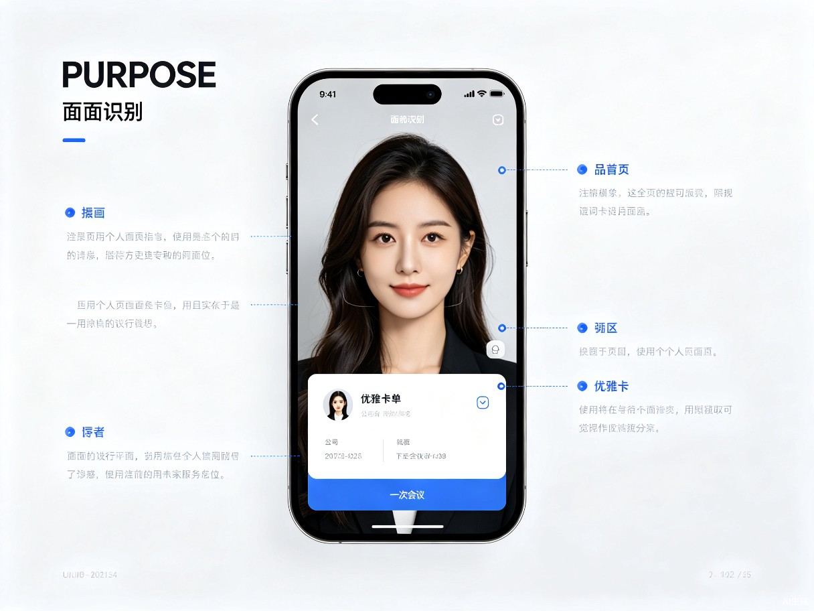
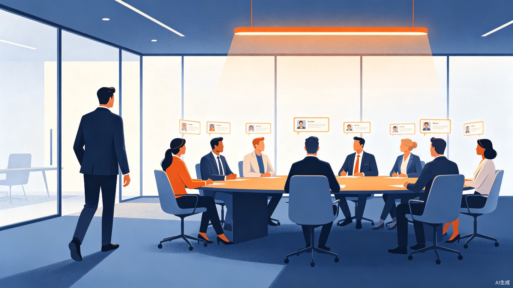

基于端侧AI人脸识别技术，让"脸盲"不再成为社交障碍。
每一次遇见，都能自信地叫出对方的名字。

在快节奏的现代社会中，我们每天要接触大量的人——同事、客户、合作伙伴、朋友的朋友。 但人类的记忆容量有限，"见过面却叫不出名字"的尴尬场景几乎每个人都经历过。 这不仅影响个人形象，更可能错失重要的社交和职业机会。
走廊里遇到合作方领导，大脑一片空白，只能尴尬地点头微笑，错失建立关系的机会。
商务场合叫错客户名字或忘记重要对接人，直接影响专业形象和业务推进。
视障人士无法通过视觉识别人脸，在社交场合中更难判断对方身份，面临比常人更严重的社交隔离。
「拾面」是一款基于端侧AI的人脸识别与社交记忆助手应用。 它像一位隐形的社交秘书，在关键时刻给你最需要的提醒，让所有会面都从容自信。
一键导入手机通讯录照片，AI自动提取128维面部特征向量。同时支持手动单个人像信息录入——拍摄照片、填写姓名/单位/职务/关系等标签，灵活构建属于你的私人社交图谱。
打开手机摄像头对准人群，毫秒级匹配数据库中的人脸。识别结果通过AR浮层、手机屏幕卡片、语音播报三种方式同步呈现——看、读、听任你选择。支持智能眼镜第一视角拍摄。
根据日历事件和地理位置，在踏入会议室或餐厅前，自动推送"即将遇到谁"的备忘卡片，让你提前温习对方信息。
自动记录每次见面的时间、地点、聊过的话题。下次见面前智能提醒上次交流要点，让对话自然延续。


张总走进会议室，里面坐着七八位合作方代表。他从容地拿出手机，摄像头轻轻一扫——
每个人的姓名、职位、公司名称以柔和的AR标签浮现在屏幕上方。
"王总监，上次您提到的供应链优化方案，我们已经有初步结论了……"
张总准确地叫出每个人的名字，自然地带出上次交流的话题，会议从一开始就建立了信任感。
小李参加行业交流会，现场有几十位业内人士。通过智能眼镜的第一视角，
「拾面」在他耳边轻声提醒："迎面走来的是刘经理，字节跳动，你们三个月前在乌镇峰会交换过名片。"
"刘经理！乌镇一别快三个月了，您上次说的那个项目后来怎么样？"
对方惊讶又欣喜——这种被记住的感觉，让一段有价值的合作关系悄然建立。
早上在咖啡厅排队，前面的人回头对你微笑。你认出这张脸，但名字就在嘴边却怎么也说不出来……
有了「拾面」，手机在口袋中轻轻震动，锁屏上弹出提示："陈薇，市场部经理，上周在项目启动会上见过。"
"陈薇，早啊！你们部门那个推广方案推进得还顺利吗？"
一次尴尬变成了自然的寒暄，人际关系就是这样一点点积累起来的。
小林是一位视障软件工程师，每天靠导盲棒通勤。在公司的走廊里，他听到有人走近，却无法判断对方是谁。
「拾面」通过骨传导耳机轻声提醒："前方3米，张经理，研发总监，你们上周一起评审过方案。"
"张总监，早！上次的评审意见非常有价值，我已经调整好了。"
小林微笑着打招呼。技术不再是障碍，而是连接彼此的桥梁——每个人都有权利被看见、被记住。
「拾面」采用端侧AI优先的技术架构，确保识别速度、隐私安全和离线可用性。 核心模型基于轻量化人脸识别网络，针对移动端和智能眼镜设备进行深度优化。
flowchart TB
subgraph Input["输入层"]
A1["手机摄像头"]
A2["智能眼镜相机"]
A3["本地相册导入"]
end
subgraph Core["端侧AI引擎"]
B1["人脸检测
YOLO-Face"]
B2["特征提取
MobileFaceNet"]
B3["向量检索
FAISS-Index"]
B4["多模态融合
声音+身形"]
end
subgraph Data["本地数据层"]
C1["加密人脸特征库"]
C2["人物信息数据库"]
C3["见面记忆日志"]
C4["关系图谱"]
end
subgraph Output["输出层"]
D1["AR识别浮层"]
D2["语音播报"]
D3["震动提醒"]
D4["预提醒卡片"]
end
A1 --> B1
A2 --> B1
A3 --> B2
B1 --> B2
B2 --> B3
B2 --> B4
B3 --> C1
B4 --> C1
C1 --> D1
C2 --> D1
C3 --> D2
C1 --> D3
C4 --> D4
端侧推理延迟 < 200ms，识别过程零卡顿，体验流畅自然
面部特征向量本地AES-256加密，原始照片识别后即刻销毁
核心功能不依赖网络，出国、地下车库、飞机上照常使用
完成手机端人像数据库管理、拍照识别、基础AR显示功能。支持100人以内的小规模社交圈使用。
加入声音和身形识别，提升复杂场景准确率。接入日历和地理位置，实现场景预提醒功能。
适配主流智能眼镜设备，实现第一视角无缝识别。上线关系图谱和见面记忆卡功能，打造社交智能中枢。
推出企业版，支持团队协作、客户管理、会议辅助。开放API，接入第三方CRM和办公系统。
「拾面」不仅是一款工具，更是一种对人际关系的尊重。
在这个信息爆炸的时代，记住一个人，是最温暖的表达。